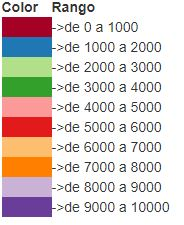

Muestra el consolidado de salidas de colombianos desde el territorio nacional a partir del 2012 al 2018, discriminado por país destino y género
Información extraída del portal Datos Abierto de Colombia en el siguiente enlace: https://www.datos.gov.co/Estad-sticas-Nacionales/Salidas-de-colombianos-desde-el-territorio-naciona/efw5-jiej
- Esta visualización nos permite ver cuáles son los países más visitados por los colombianos, Cada circulo representa un País.
- También cuenta con una opción de selección, la cual nos permite clasificarlos por género (Femenino / Masculino) o totalizado.
- El tamaño del circulo depende la cantidad de personas. A continuación, una escala del color:
